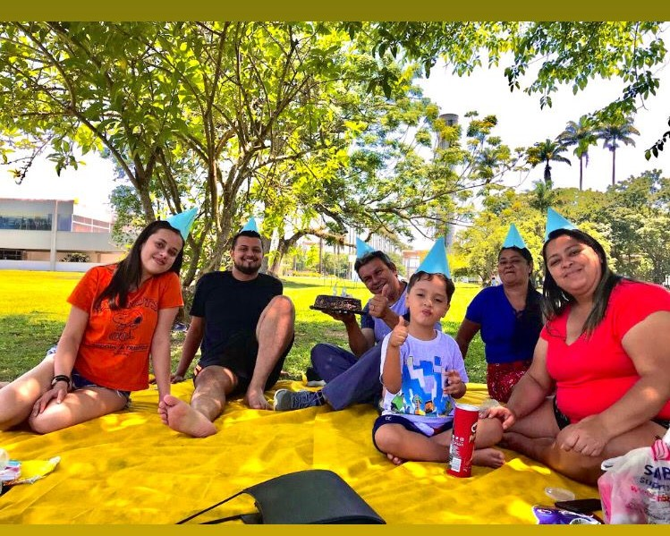

Sou apaixonado por tecnologia! Tive meu primeiro contato com a informática aos 7 anos de idade e desde então venho descobrindo um pouco mais sobre essa área maravilhosa. Gosto da oportunidade que a tecnologia oferece às pessoas, e da proposta de facilitar nossas vidas, tenho o sonho de conhecer o mundo inteiro compartilhando todo meu aprendizado e também adquirindo novas experiências, acredito que conhecimento é algo que todos deveriam ter acesso.
Nascido na cidade de Jacareí, interior de São Paulo, fui criado por meus avós, Valdenice e José. Me deram uma base exemplar que deixou claro o tipo de pessoa que eu gostaria de ser, pois sou muito orgulhoso por tudo o que fizeram por mim. Sou casado com Sara Melo, alguem que admiro e amo compartilhar a vida. Sou ariano, gosto de pedalar em dias de calor, caminhar e conhecer cidades pequenas da região.